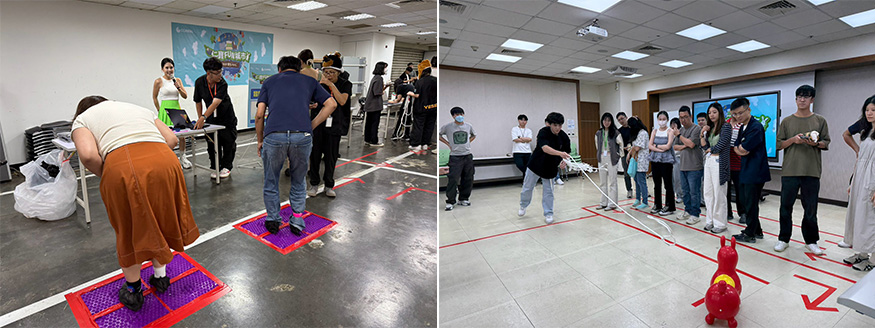

寶編觀察室｜有點痛、有點難，但還是想再試一次！
組織溝通與文化處
每次慶生會，除了觀察大家喜不喜歡食物，小編也很喜歡觀察同仁玩遊戲的樣子。這次07–08月慶生會，讓我印象最深的，是大家一邊喊痛、一邊努力踩腳墊的畫面。
原本只是來參加慶生會，開始挑戰後，卻比想像中投入啊！
腳底有點痛，但還是想完成任務
這次的「馬不停蹄」，需要在腳上配戴計步器，透過踩踏腳墊累積指定步數。規則看起來簡單，實際踩起來卻真的很有感。
小編試玩後只能說：超痛！
但現場還是看到不少同仁為了拚進前兩名，忍著痛狂踩，完全沒有要停下來的意思，真的很厲害。
另一個「馴馬高手」則是站在指定距離，將繩圈套上馬匹道具。這個遊戲看別人玩，好像不難，輪到自己才知道不是那麼回事。即使有人提示訣竅，我還是一直套不中，試了一分鐘後，就決定放棄了。
也因此，看到現場同仁認真挑戰，我除了覺得有趣，也有些佩服。至少在堅持這件事上，大家比小編厲害！
 |
難一點，好像也沒關係
同仁的回饋裡，有人說遊戲有點難，有人說玩到流汗，但也覺得有趣、好玩。這和我在現場看到的情形很接近：大家不只是完成流程、領取禮物，而是真的投入其中。
有點困難、需要挑戰的遊戲，似乎正是仁寶同仁喜歡的。大家不只想玩，也享受不斷嘗試、挑戰成功的過程。
大家的美食喜好，我們也有記下來
除了遊戲，這次大家對洪瑞珍似乎很感興趣。壽星禮和闖關禮要準備什麼、準備多少，每次都需要花心思思考。同仁對品項的反應，以及活動結束後的領取數量，都是下一次安排的參考喔！
慶生會的時間不長，但這些小小的反應，讓每一期都有不同的記憶。
謝謝大家這次的參與，也祝07–08月的壽星生日快樂。
希望大家帶回去的，除了禮物，還有一段暫時離開工作、玩得投入的時光。